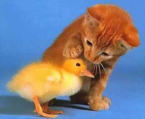
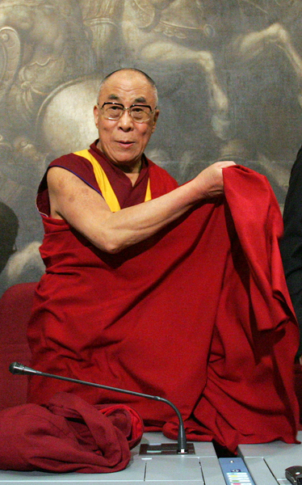

Why Buddhists Should be Vegetarian
2012-01-28T12:39:49
Original: https://sujato.wordpress.com/2012/01/28/why-buddhists-should-be-vegetarian-with-extra-cute/
The Buddha ate meat. This is a fairly well attested fact. The issue of vegetarianism is addressed a few times in the Suttas, notably the Jivaka Sutta of the Majjhima Nikaya. The Buddha consistently affirmed that monastics were permitted to eat meat, as long as it was not killed intentionally for them. There are numerous passages in the Vinaya that refer to the Buddha or the monastics eating meat, and meat is regularly mentioned as one of the standard foods.
For these reasons, the standard position in Theravada Buddhism is that there is no ethical problem with eating meat. If you want to be vegetarian, that is a purely optional choice. Most Theravadins, whether lay or monastic, eat meat, and claim to be acting within the ethical guidelines of the Buddha’s teachings.
This position sits squarely within a straightforward application of the law of kamma, understood as intention. Eating meat involves no intention to do harm. As there is no intention, there is no kamma. As there is no kamma, there is no ethical problem.
The situation in Mahayana is more complicated. Mahayanists, especially in East Asia, embrace vegetarianism, often as a temporary measure for religious events, although the monastics are typically vegetarian all the time. The motivation is, at least in part, an expression of the greater emphasis on compassion in Mahayana. In practice, however, Mahayanists often adopt vegetarianism (as do Hindus) as a rite of purification. This is despite such texts as the Amagandha Sutta of the Sutta Nipata, where the Buddha insists that eating meat is not a source of spiritual impurity. Tibetan monastics, on the other hand, usually eat meat.
Despite the apparently straightforward situation in Theravada, the problem does not go away. For obvious reasons: eating meat requires the killing of animals, and this directly violates the first precept. Eating meat is the direct cause of an immense quantity of suffering for sentient beings. Many people, myself included, struggle with the notion that a religion as categorically opposed to violence as Buddhism can so blithely wave away the suffering inherent in eating meat.
Let’s have a closer look and see if we can discern the roots of this problem. There are a few considerations that I would like to begin with. We live in a very different world today than the Buddha lived in, and Buddhist ethics, whatever else they may be, must always be a pragmatic response to real world conditions.
Animals suffer much more today than they did 2500 years ago. In the Buddha’s time, and indeed everywhere up until the invention of modern farming, animals had a much better life. Chickens would wander round the village, or were kept in a coop. Cows roamed the fields. The invention of the factory farm changed all this. Today, the life of most meat animals is unimaginable suffering. I won’t go into this in detail, but if you are not aware of the conditions in factory farms, you should be. Factory farms get away with it, not because they are actually humane, but because they are so mind-bendingly horrific that most people just don’t want to know. We turn away, and our inattention allows the horror to continue.
The other huge change since the Buddha’s time is the destruction of the environment. We are all aware of the damage caused by energy production and wasteful consumerism. But one of the largest, yet least known, contributors to global warming and environmental destruction generally is eating meat. The basic problem is that meat is higher on the food chain as compared with plants, so more resources are required to produce nutrition in the form of meat. In the past this was not an issue, as food animals typically ate things that were not food for humans, like grass. Today, however, most food animals live on grains and other resource-intensive products. This means that meat requires more energy, water, space, and all other resources. In addition to the general burden on the environment, this creates a range of localised problems, due to the use of fertilisers, the disposal of vast amounts of animal waste, and so on.
 One entirely predictable outcome of factory farming is the emergence of virulent new diseases. We have all heard of ‘swine flu’ and ‘bird flu’; but the media rarely raises the question: why are these two new threats derived from the two types of animals that are most used in factory farming? The answer is obvious, and has been predicted by opponents of factory farming for decades. In order to force animals to live together in such overcrowded, unnatural conditions, they must be fed a regular diet of antibiotics, as any disease is immediately spread through the whole facility. The outcome of this, as inevitable as the immutable principles of natural selection, is the emergence of virulent new strains of antibiotic resistant diseases. In coming years, as the limited varieties of antibiotics gradually lose their efficacy, this threat will recur in more and more devastating forms.
One entirely predictable outcome of factory farming is the emergence of virulent new diseases. We have all heard of ‘swine flu’ and ‘bird flu’; but the media rarely raises the question: why are these two new threats derived from the two types of animals that are most used in factory farming? The answer is obvious, and has been predicted by opponents of factory farming for decades. In order to force animals to live together in such overcrowded, unnatural conditions, they must be fed a regular diet of antibiotics, as any disease is immediately spread through the whole facility. The outcome of this, as inevitable as the immutable principles of natural selection, is the emergence of virulent new strains of antibiotic resistant diseases. In coming years, as the limited varieties of antibiotics gradually lose their efficacy, this threat will recur in more and more devastating forms.
So, as compared with the Buddha’s day, eating meat involves far more cruelty, it damages the environment, and it creates diseases. If we approach this question as one of weights and balance, then the scales have tipped drastically to the side of not eating meat.
 Sometimes in Theravada vegetarianism is slighted, as it is traditionally associated with the ‘5 points’ of Devadatta. Devadatta wanted to prove he was better than the Buddha, so he asked the Buddha to enforce five ascetic practices, such as only accepting alms food, live all their lives in the forest, and so on. These practices are regarded as praiseworthy, and Devadatta’s fault was not in promoting these as such, but in seeking to make them compulsory. Stories of the Buddha’s childhood emphasize how compassionate he was compared to Devadatta’s cruelty to animals, perhaps because of Devadatta’s asscoiation with vegetarianism. So rather than deprecating the vegetarians as ‘followers of Devadatta’, one could infer from this passage that vegetarianism, like the other practices, was praiseworthy, but the Buddha did not wish to make it compulsory.
Sometimes in Theravada vegetarianism is slighted, as it is traditionally associated with the ‘5 points’ of Devadatta. Devadatta wanted to prove he was better than the Buddha, so he asked the Buddha to enforce five ascetic practices, such as only accepting alms food, live all their lives in the forest, and so on. These practices are regarded as praiseworthy, and Devadatta’s fault was not in promoting these as such, but in seeking to make them compulsory. Stories of the Buddha’s childhood emphasize how compassionate he was compared to Devadatta’s cruelty to animals, perhaps because of Devadatta’s asscoiation with vegetarianism. So rather than deprecating the vegetarians as ‘followers of Devadatta’, one could infer from this passage that vegetarianism, like the other practices, was praiseworthy, but the Buddha did not wish to make it compulsory.
To argue in such a way, however, is clutching at straws. There is a wider problem, and I think the discussions of the issue among Buddhists generally avoid this. And the wider issue is this: meat eating is clearly harmful. That harm is a direct but unintended consequence of eating meat. Since there is no intention to cause harm, eating meat is not bad kamma. There are therefore two logical possibilities: eating meat is ethical; or kamma is not a complete account of ethics.
Let us look more closely at this second possibility. The notion that actions should not be done, even when they involve no harmful intention, is found constantly in the Vinaya. For example, a monk is criticised for baking bricks that have small creatures in them, even though he was unaware of them and did not intend any harm. The Buddha laid down a rule forbidding this.
In another case, the Buddha laid down a rule that a monastic must inquire about the source of meat before accepting it. The context of this rule was that someone had offered human flesh (their own – it’s a long story!) and this rule is usually said to only apply if one has doubts as to whether the food is human flesh. But that is not what the rule states – it simply says that one should inquire as the the source of the meat, and that it is an offence to eat meat without doing so. Needless to say, this rule is ignored throughout Theravada.
These are a couple of examples in the context of causing harm to beings. There are many others. Indeed, there are several Vinaya rules that were laid down in response to the actions of arahants. An arahant cannot act in an intentionally harmful manner, so these rules cannot be taken to imply that the motivation behind the acts was wrong. The acts have unintended harmful consequences, and this is why they are prohibited.
In this sense, if the Vinaya pertains to sila, or ethics, then the scope of sila is broader than the scope of kamma. This is, when you think about it, common sense. Kamma deals only with intention and the consequences of intentional action. This is critical because of its place in the path to liberation. We can change our intentions, and thereby purify our minds and eventually find release from rebirth. That is the significance of kamma to us as individuals.
But ethics is not just a matter of individual personal development. It is also a social question, or even wider, an environmental question in the broad sense. How do we relate to our human and natural context in the most positive and constructive way?
I am suggesting that, while kamma deals with the personal, ethics includes both the personal and the environmental.
 As well as broadening ethics in this way, I would suggest we should deepen it. Ethics is not just what is allowable. Sure, you can argue that eating meat is allowable. You can get away with it. That doesn’t mean that it’s a good thing. What if we ask, not what can I get away with, but what can I aspire to?
As well as broadening ethics in this way, I would suggest we should deepen it. Ethics is not just what is allowable. Sure, you can argue that eating meat is allowable. You can get away with it. That doesn’t mean that it’s a good thing. What if we ask, not what can I get away with, but what can I aspire to?
When we recite the first precept, we say, ‘I undertake the training to refrain from killing living beings’. This is a challenge, and in itself is a powerful ethics. Yet it is merely a short summary of a principle. It was never meant to fully describe the virtue of harmlessness. When the Buddha spoke of this precept in more detail, this is what he had to say:
Having abandoned the taking of life, refraining from the taking of life, one dwells without violence, with the knife laid down, scrupulous, full of mercy, trembling with compassion for all sentient beings.
This is not just an ethic of allowability. It doesn’t merely set a minimum standard. It calls us out, asking us to aspire to a higher sense of compassion, an ethic that deeply feels for the welfare of all beings. More than just asking, ‘Does this act come from an intention to harm’, we ask ourselves, ‘Is this act the best I can possibly do to promote the welfare of all?’ Rather than simply escaping bad kamma, we create good kamma.
One obvious criticism of this approach is that being vegetarian does not mean you don’t cause harm. We hurt beings in many unintentional way, driving cars, buying products, almost everything we do. If we follow this principle to its logical conclusion, we end up with Jainism, and will have to walk everywhere with a cloth over our mouth to keep the flies from dying, and a soft broom to brush the creatures away. (Note, though, that even the Jains have a complex relationship with vegetarianism.) It is simply arbitrary to identify meat eating as the cause of harm. This is, after all, the point of the well-known (though apocryphal) story of Siddhattha as a young boy, seeing the plough turning up the soil, killing some worms, and leaving the others to be picked off by the crows. Even eating rice involves the unintentional destruction of life. The only solution is to get off the wheel.
 The problem with this argument is that it confuses the existential with the ethical. On an existential level, quite right, any form of life, even the most scrupulous, will inevitably cause harm to some beings. This is one of the reasons why the only final solution is escape from rebirth altogether. Yet meanwhile, we are still here. Ethics is not concerned with the ultimate escape from all suffering, but with minimising the harm and maximising the benefit we can do right here. It is relative and contextual. Sure, being vegetarian or vegan we will still cause harm. And sure, there are boundary issues as to what is really vegetarian (Honey? Bees are killed. Sugar? Animal bones are used for the purification process… )
The problem with this argument is that it confuses the existential with the ethical. On an existential level, quite right, any form of life, even the most scrupulous, will inevitably cause harm to some beings. This is one of the reasons why the only final solution is escape from rebirth altogether. Yet meanwhile, we are still here. Ethics is not concerned with the ultimate escape from all suffering, but with minimising the harm and maximising the benefit we can do right here. It is relative and contextual. Sure, being vegetarian or vegan we will still cause harm. And sure, there are boundary issues as to what is really vegetarian (Honey? Bees are killed. Sugar? Animal bones are used for the purification process… )
But the fact that we can’t do everything does not imply that we shouldn’t do this thing. The simple fact is that eating meat cause massive and direct harm to many creatures. That harm is, almost always, easily avoidable. Becoming vegetarian does not involve any huge sacrifices or moral courage. It just takes a little restraint and care. This is even more so today, when there is a wide range of delicious, cheap, nutritious vegetarian foods available. The choice of becoming vegetarian is, of all moral choices we can make, one of the most beneficial, at the smallest cost to ourselves.
To return to the basic problem. As Buddhists, we expect that the Buddha kept the highest possible ethical conduct. And for the most part, he did. So if the Buddha allowed something, we feel there can’t be anything wrong with it. There is nothing dogmatic or unreasonable about such an expectation. When we read the Suttas and the Vinaya, we find again and again that the Buddha’s conduct was, indeed, of the highest order.
How then, if meat eating is an inferior ethical standard, can it be that the Buddha did it? This is the crux of the matter. And I don’t have an easy answer.
 Part of it is to do with the nature of the mendicant life. The Buddha and his disciples wandered from house to house, simply accepting whatever was offered. It’s hard to refuse offerings given in such a spirit. Yet this answer is incomplete, as there are many foods, including several types of meat, that are prohibited in the Vinaya. Clearly the monastics were expected to have some say over what went into their bowls.
Part of it is to do with the nature of the mendicant life. The Buddha and his disciples wandered from house to house, simply accepting whatever was offered. It’s hard to refuse offerings given in such a spirit. Yet this answer is incomplete, as there are many foods, including several types of meat, that are prohibited in the Vinaya. Clearly the monastics were expected to have some say over what went into their bowls.
There are other considerations I could raise. But I don’t want to press the textual argument too far. In the end, we have a partial, and partially understood record of the Buddha’s life and teachings. For those of us who have been blessed enough to have encountered the Dhamma, we have found it to be an uplifting and wise guide to life.
And yet: we cannot let our ethical choices be dictated by ancient texts. Right and wrong are too important. The scriptures do not contain everything, and do not answer every question. As Buddhists, we take the texts seriously, and do not lightly discard their lessons. Yet there is a difference between learning from scripture and submitting to it.
There are some things that the scriptures simply get wrong. The Suttas make no critique of slavery, for example, and yet for us this is one of the most heinous of all crimes.
Why are these things as they are? I don’t know. I have devoted a considerable portion of my life to studying and understanding the Buddhist scriptures, and in almost all things of importance I find them to be impeccable. But my study has also shown me the limits of study. We cannot access the truth through scripture. We can only access certain ideas. Our understanding and application of those ideas is of necessity imperfect. There is always something left over.
This being so, it is unethical to cite scripture as a justification for doing harm. If eating meat is harmful and unnecessary, it remains so whatever the texts say. Our sacred texts are sacred, not because they determine what is right and wrong, but because they inform our choices and help us to do better.
The principle of harmlessness underlies the very fabric of the Dhamma, and if its application in this context is problematic, the principle itself is not in question. It simply means our scriptures are imperfect, and the practice of ethics is complex and messy. But we knew that already. It is not out of disrespect that we make our choice, but out of respect for the deeper principles of compassion and harmlessness.